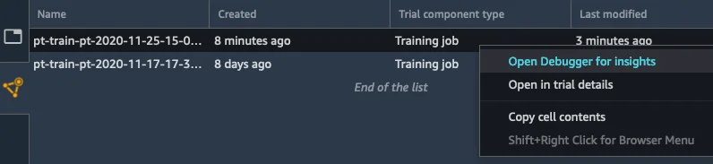
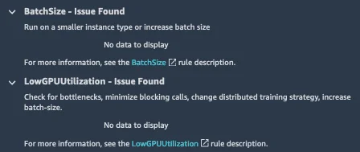
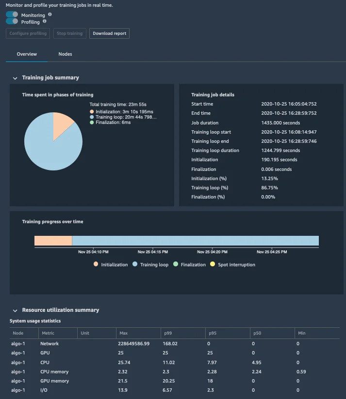

Published: 2020-12-08 | Originally published at AWS Blog
Today, I’m extremely happy to announce that Amazon SageMaker Debugger can now profile machine learning models, making it much easier to identify and fix training issues caused by hardware resource usage.
Despite its impressive performance on a wide range of business problems, machine learning (ML) remains a bit of a mysterious topic. Getting things right is an alchemy of science, craftsmanship (some would say wizardry), and sometimes luck. In particular, model training is a complex process whose outcome depends on the quality of your dataset, your algorithm, its parameters, and the infrastructure you’re training on.
As ML models become ever larger and more complex (I’m looking at you, deep learning), one growing issue is the amount of infrastructure required to train them. For instance, training BERT on the publicly available COCO dataset takes well over six hours on a single p3dn.24xlarge instance, even with its eight NVIDIA V100 GPUs. Some customers like autonomous vehicle companies deal with much larger datasets, and train object detection models for several days.
When a complex training job takes this long, the odds that something goes wrong and ruins it are pretty high, not only wasting time and money but also causing lots of frustration. Important work needs to be put on the back burner while you investigate, figure out the root cause, try to fix it, and then run your training job again. Often, you’ll have to iterate quite a few times to nail the problem.
Depending on the ML framework that you use, and sometimes on its version, you may or may not be able to use existing framework-specific tools. Often, you’ll have to build and maintain your own bespoke tools. Even for experienced practitioners, this is a lot of hard work. For regular developers like me, this is an utterly daunting task.
Introducing Model Profiling in Amazon SageMaker Debugger
Launched
last year at AWS re:Invent,
Amazon SageMaker Debugger
is a capability of
Amazon SageMaker
that automatically identifies complex
issues
developing in ML training jobs. These include loss not decreasing, exploding gradients, and more.
Now, SageMaker Debugger can also monitor hardware resource usage, and allows you to profile your training job to help you correlate resource usage to ML operations in your training script. Thus, you’ll be able to resolve performance issues much quicker, and iterate through your training job much faster.
Chaim Rand , ML Algorithm Developer at Mobileye , an Intel company building automated driving and driver assistance systems, had the opportunity to work with the new profiling capabilities, and here’s what he told us: “ Many of the assisted driving and autonomous vehicle technologies that we develop at Mobileye, rely on training deep neural network models to detect a wide variety of road artifacts, including vehicles, pedestrians, speed bumps, road signs and more. Often, these models train on extremely large datasets, on multiple machines, and for periods of up to several days. For us, at Mobileye, it is imperative that we have a toolkit of advanced performance profiling capabilities, for analyzing the flow of data across the network, CPU, and GPU resources, and for pinpointing performance issues. The profiling functionality in SageMaker Debugger provides just that, taking performance profiling out of the domain of a few specialized experts, and empowering our algorithm developers to maximize training resource utilization, accelerate model convergence, and reduce cost. ”
At launch, the new profiling capability of SageMaker Debugger is available for TensorFlow 2.x and PyTorch 1.x. All you have to do is to train with the corresponding built-in frameworks in Amazon SageMaker . Distributed training is supported out of the box.
Setting a single parameter in your SageMaker estimator, and without any change to your training code, you can enable the collection of infrastructure and model metrics such as:
In addition, you can visualize how much time is spent in different phases, such as preprocessing, training loop, and postprocessing. If needed, you can drill down on each training epoch, and even on each function in your training script.
By default, metrics are collected every 500ms, and you can also set this value to 100ms, 200ms, 1s, 5s, and 1min. For finer-grained analysis, you can also enable and disable profiling explicitly in your training code, only capturing metrics for specific parts.
While your training job is running, you can easily visualize these metrics in Amazon SageMaker Studio, our web-based integrated development environment for ML. As you would expect, all data is also available through the SageMaker Debugger API, and you can retrieve it to build your own graphs.
Running in parallel of the training job, an Amazon SageMaker Processing analyzes captured data, builds graphs, and generates a report providing insights on potential problems. This doesn’t require any work on your part, as this analysis runs inside a built-in container on fully managed infrastructure.
Now, let’s run a demo with PyTorch, where we’ll profile a ResNet-50 image classification model training on the CIFAR-10 dataset.
Profiling a Training Job with Amazon SageMaker Debugger
All it takes to enable profiling on your training job is an extra parameter in your SageMaker estimator. You don’t need to change a line in your training code. By default,
SageMaker Debugger
uses a set of built-in profiling rules looking for unwanted conditions that could develop during training, such as low GPU utilization. On top of reporting these conditions,
SageMaker Debugger
also triggers events in
CloudWatch Events
. For example, I could use them to run a
AWS Lambda
function that automatically stops inefficient training jobs.
First, I create a profiling configuration capturing data every 500ms. Optionally, I could select a training step interval if I wanted to profile only a certain portion of the job.
import sagemaker
from sagemaker.profiler import ProfilerConfig
profiler_config = ProfilerConfig(profiling_interval_millis=500)
Then, I pass this configuration to my PyTorch
Estimator
, training on an
ml.p3.8xlarge
instance equipped with 4 NVIDIA V100 GPUs.
from sagemaker.pytorch import PyTorch
estimator = PyTorch(
role=sagemaker.get_execution_role(),
instance_count=1,
instance_type='ml.p3.8xlarge',
entry_point='train_pt.py',
framework_version='1.5.0',
hyperparameters={"batch_size":512, "epochs":10},
profiler_config=profiler_config)Then, I launch the training job as usual. Once the job is running, profiling data is captured and stored in Amazon S3.
path = estimator.latest_job_profiler_artifacts_path()
print(path)
s3://sagemaker-us-east-2-123456789012/pt-train-pt-2020-11-17-17-38-43-231/profiler-outputUsing the SageMaker SDK, I can retrieve and count profiling events.
from smdebug.profiler.system_metrics_reader import S3SystemMetricsReader
system_metrics_reader = S3SystemMetricsReader(path)
system_metrics_reader.refresh_event_file_list()
last_timestamp = system_metrics_reader.get_timestamp_of_latest_available_file()
events = system_metrics_reader.get_events(0, last_timestamp)
print("Found", len(events), "recorded system metric events. Latest recorded event:", last_timestamp)
Found 411853 recorded system metric events. Latest recorded event: 1605620280000000Of course, I could parse and analyze these profiling events, build my own graphs, and so on. Instead, let’s visualize them in near real-time in SageMaker Studio.
While my training job is still running, I locate it in SageMaker Studio, and I right-click “Open Debugger for insights”.

This opens a new tab, and I select the “Nodes” panel where I can see details statistics for each instance in my training job. So, how’s my training job doing? Feel free to click on the image below to zoom in.
Apparently, this job isn’t going great. GPU utilization and GPU memory utilization are desperately flat at around 10%. I’m definitely not pushing my multi-GPU instance hard enough. Maybe GPUs are not receiving data fast enough because the CPU can’t keep up? Let’s check the system utilization heatmap.
The CPU is taking a nap here, hardly ever exceeding 20% usage. This instance is definitely not busy enough. Is there anything I could do to fix this?
Switching to the “Overview” panel, I see that some of the built-in profiling rules have been triggered.

LowGPUUtilization
confirms what I saw on the graphs above.
BatchSize
is very interesting, as it suggests increasing the size of mini-batches sent to the GPUs by the training script running on the CPU. This should definitely help fill GPU memory, put more GPU cores to work, speed up my training job, and improve infrastructure usage.
At this point, I should decide to stop my inefficient training job, and to relaunch it with a larger batch size. Here, I’ll let it run to completion to show you the report generated by the SageMaker Processing job running in parallel of your training job.
Once the training job is complete, I can see its summary in the “Overview” panel.

Clicking on the “Download report” button, I get a very detailed report that includes additional metrics, for example the ratio between the different phases of the training job, or the ratio between the forward and backward pass.
I can also see information on the most time-consuming CPU and GPU operators, which is really important if I wanted to optimize my code. For example, the graph below tells me that the most time-consuming GPU operations in my training job are backward pass convolution operators.
There’s much more to read in the report (rules summary, training loop analysis, and more). A companion notebook is also available to understand how graphs have been built, and how you can tailor them to your own needs.
Getting Started
We’ve just scratched the surface, and there are many more features in
Amazon SageMaker Debugger
that make it easy to gather, analyze and visualize model profiling information. You can start using it today in all regions where Amazon SageMaker is available. You won’t be charged for any compute used to run built-in profiling rules.
You’ll find sample notebooks on Github, so give them a try , and let us know what you think. We’re always looking forward to your feedback, either through your usual AWS support contacts, or on the AWS Forum for SageMaker.
- JulienJulien is the Artificial Intelligence & Machine Learning Evangelist for EMEA . He focuses on helping developers and enterprises bring their ideas to life. In his spare time, he reads the works of JRR Tolkien again and again.
{kind=link}
{kind=link}
{kind=link}
{kind=link}